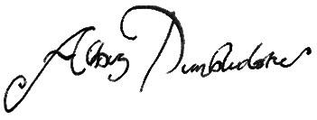

Önsöz
ÇAĞLAR BOYU QUIDDITCH, Hogwarts kütüphanesinin en popüler kitaplarından biri. Kütüphanecimiz Madam Pince'in bana söylediği kadarıyla, hemen hemen her gün elleniyor, kirletiliyor, özetle çeşit çeşit kötü muameleye maruz kalıyormuş -ki bu bir kitap için büyük bir iltifattır. Düzenli olarak Quidditch oynayan ya da seyredenler Mr. Whisp'in kitabından çok hoşlanacak, tıpkı büyücülük tarihinin tamamıyla ilgilenen bizler gibi. Nasıl ki biz Quidditch'i geliştirdiysek, Quidditch de bizi geliştirdi; Quidditch yaşamın her alanındaki cadılar ve büyücüleri birleştirir, coşku, zafer ve (Chudley Cannons taraftarları söz konusu olduğunda) umutsuzluk anlarını paylaşmamızı sağlar.
İtiraf etmeliyim ki Madam Pince'i, çok sayıda kopyası çıkarılsın ve daha çok insana ulaşsın diye kitaplanndan birinden ayrılmaya ikna etmekte güçlük çektim. Hatta, kitabın Muggle'lara açılacağını söylediğimde bir süre dili tutuldu. Dakikalarca kıpırdayamadı, gözlerini bile kırpıştırmadı. Kendine geldiğinde bana aklımı yitirip yitirmediğimi soracak kadar da düşünceli davrandı. Onu memnuniyetle bu konuda temin ettikten sonra, kendisine bu beklenmedik karara niçin vardığımı açıkladım.
Muggle okuyuculara Comic Relief'in çalışmalarını tanıtmaya zaten gerek yok. O sebepten, Madam Pince'e yaptığım açıklamayı sadece bu kitabı satın almış cadılar ve büyücüler için tekrar ediyorum. Comic Relief yoksulluk, adaletsizlik ve felaketle mücadele etmek için kahkahayı kullanıyor. Kitlelerin neşesi, büyük miktarda paraya dönüşüyor (1985'te işe başladıklanndan beri 174 milyon pound - yani otuz dört milyon Galleon'un üzerinde). Bu kitabı satın alarak -almanızı da şiddetle tavsiye ediyorum, çünkü para vermeden uzun süre okursanız, kendinizi bir Hırsız Laneti'nin hedefi konumunda bulabilirsiniz- bu sihirli göreve siz de katkıda bulunmuş olacaksınız.
Bu açıklamanın Madam Pince'i kütüphane kitaplarından birini Muggle'lara açma konusunda rahatlattığını söylesem, okuyucularımı kandırmış olurum. Bir sürü başka seçenek önerdi; Comic Relief'e kütüphanenin yanıp kül olduğunu bildirmek ya da ardımda herhangi bir talimat bırakmaksızın pat diye düşüp öldüğümü söylemek gibi. Ona bütün bu seçenekler arasında ilk planı tercih ettiğimi söylediğimde, gönülsüzce de olsa kitabı vermeye ikna oldu, ama tam hamle ettiğimde sinirleri buna dayanamadı, ben de parmaklannı birer birer kitabın kapağından ayırmak zorunda kaldım.
Bu kitaptan her zamanki kütüphane kitabı büyülerini kaldırmış olmama karşın, bütün izlerin silindiğine dair söz veremiyorum. Madam Pince'in, sorumluluğundaki kitaplara alışılmamış uğursuzluk büyüleri eklediğine rastlanmıştır. Geçen yıl, Kadim Biçim Değiştirme Kuramları'nın bir kopyasının üstüne dalgın dalgın bir şeyler çiktiriyordum ki, ben daha neye uğradığımı anlayamadan kitap kafama vahşi darbeler indirmeye başladı. Lütfen bu kitaba nasıl muamele ettiğiniz konusunda dikkatli olun. Sayfalannı koparmayın. Nerede olursanız olun Madam Pince'in ensenize yapışıp sizden ağır bir ceza talep etmeyeceği konusunda bir garanti veremem.
Comic Relief'i desteklediğiniz için size teşekkür ederim. Muggle'lardansa evde Quidditch oynamaya kalkmamalarını rica ediyorum; elbette ki bu kimsenin oynamadığı, tamamen kurmaca bir spor. Fırsat bu fırsat, gelecek sezonda Puddlemore United'a başarılar diliyorum.
